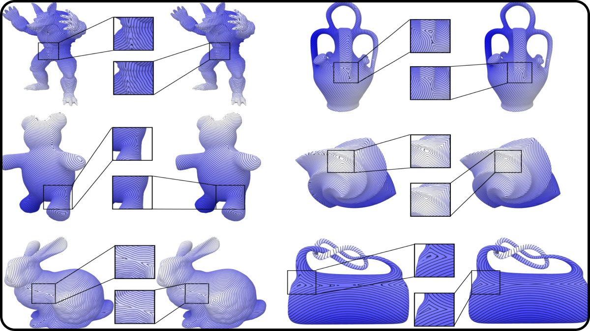
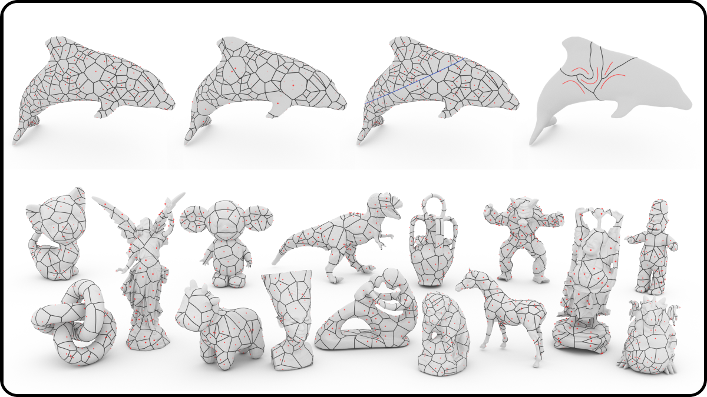

🍀 four-leaf clover
Pengfei Wang 🎧
I am currently working toward the PhD degree at the Interdisciplinary Research Center affiliated with the Shandong University under the guidance of Prof. Changhe Tu and Prof. Shiqing Xin. I grew up in Binzhou, Shandong, China, and was fortunate to spend my most memorable time at Beizhen Middle School (class of 2014). There, I made some truly great friends. I’m also deeply grateful for the support from my girlfriend.
I do research in computer graphics, mainly focusing on applying
Algorithms and Data Structures: nearest neighbor search
computer geometry.
Computer Geometry: midsurface, generalized voronoi diagram
Algorithms and Data Structures: nearest neighbor search
📜 updates

I will continue my PhD studies in computer graphics at Shandong University.
September 2024
📚 publications

Towards geodesic ridge curve for region-wise linear representation of geodesic distance field
GMP 2024 (CAGD)
Wei Liu1, Pengfei Wang1, Shuangmin Chen, Shiqing Xin, Changhe Tu, Ying He, Wenping Wang
[PDF]
Abstract: This paper addresses the challenge of representing geodesic distance fields on triangular meshes in a piecewise linear manner. Unlike general scalar fields, which often assume piecewise linear changes within each triangle, geodesic distance fields pose a unique difficulty due to their non-differentiability at ridge points, where multiple shortest paths may exist. An interesting observation is that the geodesic distance field exhibits an approximately linear change if each triangle is further decomposed into sub-regions by the ridge curve. However, computing the geodesic ridge curve is notoriously difficult. Even when using exact algorithms to infer the ridge curve, desirable results may not be achieved, akin to the well-known medial-axis problem. In this paper, we propose a two-stage algorithm. In the first stage, we employ Dijkstra's algorithm to cut the surface open along the dual structure of the shortest path tree. This operation allows us to extend the surface outward (resembling a double cover but with distinctions), enabling the discovery of longer geodesic paths in the extended surface. In the second stage, any mature geodesic solver, whether exact or approximate, can be employed to predict the real ridge curve. Assuming the fast marching method is used as the solver, despite its limitation of having a single marching direction in a triangle, our extended surface contains multiple copies of each triangle, allowing various geodesic paths to enter the triangle and facilitating ridge curve computation. We further introduce a simple yet effective filtering mechanism to rigorously ensure the connectivity of the output ridge curve. Due to its merits, including robustness and compatibility with any geodesic solver, our algorithm holds great potential for a wide range of applications. We demonstrate its utility in accurate geodesic distance querying and high-fidelity visualization of geodesic iso-lines. ... See More
GMP 2024 (CAGD)
Wei Liu1, Pengfei Wang1, Shuangmin Chen, Shiqing Xin, Changhe Tu, Ying He, Wenping Wang
[PDF]
Abstract: This paper addresses the challenge of representing geodesic distance fields on triangular meshes in a piecewise linear manner. Unlike general scalar fields, which often assume piecewise linear changes within each triangle, geodesic distance fields pose a unique difficulty due to their non-differentiability at ridge points, where multiple shortest paths may exist. An interesting observation is that the geodesic distance field exhibits an approximately linear change if each triangle is further decomposed into sub-regions by the ridge curve. However, computing the geodesic ridge curve is notoriously difficult. Even when using exact algorithms to infer the ridge curve, desirable results may not be achieved, akin to the well-known medial-axis problem. In this paper, we propose a two-stage algorithm. In the first stage, we employ Dijkstra's algorithm to cut the surface open along the dual structure of the shortest path tree. This operation allows us to extend the surface outward (resembling a double cover but with distinctions), enabling the discovery of longer geodesic paths in the extended surface. In the second stage, any mature geodesic solver, whether exact or approximate, can be employed to predict the real ridge curve. Assuming the fast marching method is used as the solver, despite its limitation of having a single marching direction in a triangle, our extended surface contains multiple copies of each triangle, allowing various geodesic paths to enter the triangle and facilitating ridge curve computation. We further introduce a simple yet effective filtering mechanism to rigorously ensure the connectivity of the output ridge curve. Due to its merits, including robustness and compatibility with any geodesic solver, our algorithm holds great potential for a wide range of applications. We demonstrate its utility in accurate geodesic distance querying and high-fidelity visualization of geodesic iso-lines. ... See More

Efficiently Computing Voronoi Diagrams over Mesh Surfaces with Arbitrary Distance Solvers
Siggraph Asia 2022 (ACM TOG)
Shiqing Xin, Pengfei Wang, Rui Xu, Dongming Yan, Shuangmin Chen, Wenping Wang, Caiming Zhang, Changhe Tu
[PDF] | [CODE]
Abstract: In this paper, we propose to compute Voronoi diagrams over mesh surfaces driven by an arbitrary geodesic distance solver, assuming that the input is a triangle mesh as well as a collection of sites on the surface. We propose two key techniques to solve this problem. First, as the partition is determined by minimizing the m distance fields, each of which rooted at a source site,we suggest keeping one or more distance triples, for each triangle, that may help determine the Voronoi bisectors when one uses a mark-and-sweep geodesic algorithm to predict the multi-source distance field. Second, rather than keep the distance itself at a mesh vertex, we use the squared distance to characterize the linear change of distance field restricted in a triangle, which is proved to induce an exact VD when the base surface reduces to a planar triangle mesh.Specially, our algorithm also supports the Euclidean distance, which can handle thin-sheet models (e.g. leaf) and runs fasterthan the traditional restricted Voronoi diagram (RVD) algorithm. It is very extensible to deal with various variants of surface-based Voronoi diagrams including(1) surface-based power diagram, (2) constrained Voronoi diagram with curve-type breaklines,and (3) curve-type generators. We conduct extensive experimental results to validate the ability to approximate the exact VD in different distance-driven scenarios. ... See More
Siggraph Asia 2022 (ACM TOG)
Shiqing Xin, Pengfei Wang, Rui Xu, Dongming Yan, Shuangmin Chen, Wenping Wang, Caiming Zhang, Changhe Tu
[PDF] | [CODE]
Abstract: In this paper, we propose to compute Voronoi diagrams over mesh surfaces driven by an arbitrary geodesic distance solver, assuming that the input is a triangle mesh as well as a collection of sites on the surface. We propose two key techniques to solve this problem. First, as the partition is determined by minimizing the m distance fields, each of which rooted at a source site,we suggest keeping one or more distance triples, for each triangle, that may help determine the Voronoi bisectors when one uses a mark-and-sweep geodesic algorithm to predict the multi-source distance field. Second, rather than keep the distance itself at a mesh vertex, we use the squared distance to characterize the linear change of distance field restricted in a triangle, which is proved to induce an exact VD when the base surface reduces to a planar triangle mesh.Specially, our algorithm also supports the Euclidean distance, which can handle thin-sheet models (e.g. leaf) and runs fasterthan the traditional restricted Voronoi diagram (RVD) algorithm. It is very extensible to deal with various variants of surface-based Voronoi diagrams including(1) surface-based power diagram, (2) constrained Voronoi diagram with curve-type breaklines,and (3) curve-type generators. We conduct extensive experimental results to validate the ability to approximate the exact VD in different distance-driven scenarios. ... See More
⛏️ resources
all software releases of the above projects can also be found here!